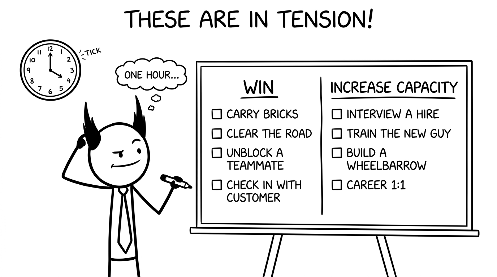

<section id="tension" data-transition="fade" style="display:flex; align-items:center; justify-content:center; padding:0; background:#fcfcfa">

<p style="position:absolute;left:0;bottom:10px;width:1920px;margin:0;text-align:center;font-family:'Patrick Hand', 'Trebuchet MS', sans-serif;font-size:22px;color:#8a8f98">Copyright Dobromir Montauk 2026</p>
<aside><b>The tension.</b> There’s no answer that’s always right. Some days the bricks have to move. Some days the best thing you can do is train the new guy. Every hour on one side is an hour not spent on the other. The rest of this talk is about making that call well, every hour, every day.</aside>
</section>
